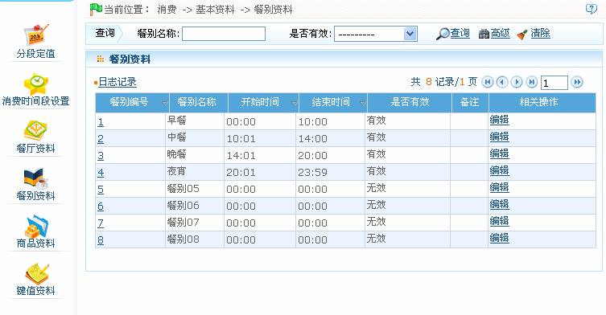
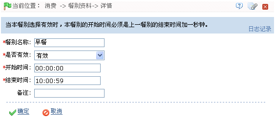

IC--8.2.4 餐别资料
点击【消费】 【基本资料】
【基本资料】 【餐别资料】，进入如下图所示餐别资料设置页面：
【餐别资料】，进入如下图所示餐别资料设置页面：

系统默认具有8个餐别资料，用户可以通过【编辑】按钮对其进行编辑，但不可删除。
-
 编辑餐别资料
编辑餐别资料
1、在餐别资料列表中，单击“餐别编号”，或单击餐别资料所在行的“相关操作”下对应的【编辑】按钮，进入编辑餐别资料页面：

根据需要修改各参数，具体修改方法如下：
餐别名称：根据需要修改餐别名称。
是否有效：默认为“有效”，可单击 按钮，在弹出的下拉框中，选择为“有效”或“无效”，选择为“有效”该分段定值才有效，否则，为无效。
按钮，在弹出的下拉框中，选择为“有效”或“无效”，选择为“有效”该分段定值才有效，否则，为无效。
开始时间、结束时间：设置该餐别的开始和结束时间。时间的设置，请参见附录1 常用操作中的3. 选择时间。
 注意：餐别的开始时间必须是上一餐别的结束时间加一分钟。
注意：餐别的开始时间必须是上一餐别的结束时间加一分钟。
2、修改完成后，单击【确定】按钮，保存并返回餐别资料页面，此时餐别资料列表中将显示修改后餐别资料信息。